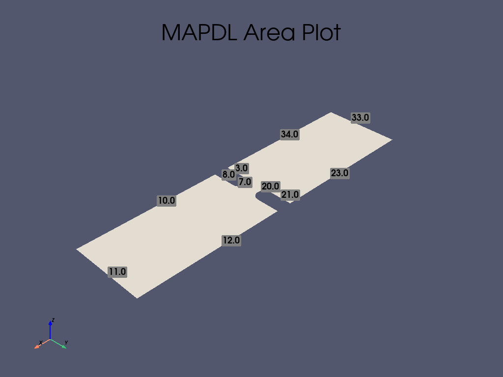
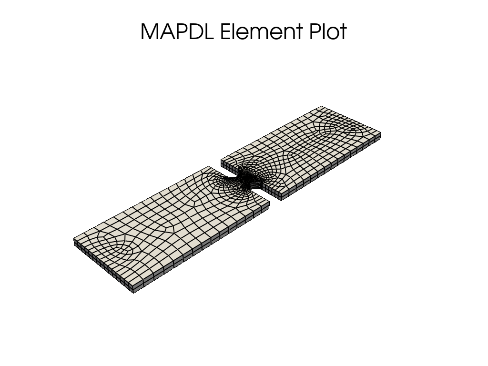

Note
Go to the end to download the full example code
缺口板的 3D 应力集中分析#
本教程是 2D 平面示例 MAPDL 2D 平面应力集中分析 的 3D 推论。 不过，此示例验证了在有限宽度薄板上建立相对单缺口模型时的应力集中因子 \(K-t\) 。
首先，将 MAPDL 作为服务启动，并禁用除错误信息之外的所有功能。
from matplotlib import pyplot as plt
import numpy as np
import pyvista as pv
from ansys.mapdl.core import launch_mapdl
mapdl = launch_mapdl(loglevel="ERROR")
C:\Users\ff\AppData\Local\Programs\Python\Python310\lib\site-packages\ansys\tools\path\path.py:818: DeprecationWarning: This method is going to be deprecated in future versions. Please use 'get_mapdl_path'.
warnings.warn(
Geometry#
创建一个矩形区域，上下各有两个凹槽。
length = 0.4
width = 0.1
notch_depth = 0.04
notch_radius = 0.01
# 创建半个圆弧
mapdl.prep7()
circ0_kp = mapdl.k(x=length / 2, y=width + notch_radius) # 矩形中心坐标
circ_line_num = mapdl.circle(circ0_kp, notch_radius)
circ_line_num = circ_line_num[2:] # 只关注底部圆弧
# 创建一条线并向下拖动顶部圆
circ0_kp = mapdl.k(x=0, y=0)
k1 = mapdl.k(x=0, y=-notch_depth)
l0 = mapdl.l(circ0_kp, k1)
mapdl.adrag(*circ_line_num, nlp1=l0)
# 底部凹槽也是如此 (except upwards)
circ1_kp = mapdl.k(x=length / 2, y=-notch_radius)
circ_line_num = mapdl.circle(circ1_kp, notch_radius)
circ_line_num = circ_line_num[:2] # 只关注顶部圆弧
# 创建一条线，将顶部圆圈向上拖动
k0 = mapdl.k(x=0, y=0)
k1 = mapdl.k(x=0, y=notch_depth)
l0 = mapdl.l(k0, k1)
mapdl.adrag(*circ_line_num, nlp1=l0)
rect_anum = mapdl.blc4(width=length, height=width)
# 请注意 pyansys 是如何解析输出并返回每条命令创建的 area 编号的。这可以用来对这些区域执行布尔运算，将圆从矩形中剪切出来。
# plate_with_hole_anum = mapdl.asba(rect_anum, circ_anum)
cut_area = mapdl.asba(rect_anum, "ALL") # cut all areas except the plate
plotter = pv.Plotter(shape=(1, 3))
plotter.subplot(0, 0)
mapdl.lsla("S")
mapdl.lplot(vtk=True, show_keypoint_numbering=True, plotter=plotter)
mapdl.lsel("all")
# 使用 vtk/pyvista 绘制 area 图
plotter.subplot(0, 1)
mapdl.aplot(
vtk=True, show_area_numbering=True, show_lines=True, cpos="xy", plotter=plotter
)
# 接下来，挤出 area 以创建体
thickness = 0.01
mapdl.vext(cut_area, dz=thickness)
# 检查 volume 绘图
plotter.subplot(0, 2)
mapdl.vplot(
vtk=True, show_lines=True, show_axes=True, smooth_shading=True, plotter=plotter
)
plotter.show()
C:\Users\ff\AppData\Local\Programs\Python\Python310\lib\site-packages\ansys\mapdl\core\plotting.py:398: UserWarning: The kwargs 'off_screen', 'notebook' and 'theme' are ignored when using 'plotter' kwarg.
warn(
Meshing#
本示例将使用 PLANE183 单元，因为只要将 KEYOPTION(3) 设置为 3 并提供厚度，就可以使用平面单元对薄板进行建模。
通过为孔附近的线条设置 LESIZE ，为网格全局大小设置 ESIZE ，在孔附近使用较高的密度对板材进行网格划分，而在板材的其余部分使用较低的密度。
线条编号可通过使用 lplot 检查来确定
# 定义厚度为 PLANE183 的单元类型
# 确保孔周围有 25 个单元
notch_esize = np.pi * notch_radius * 2 / 50
plate_esize = 0.01
# 增加缺口处的网格密度
# 使用 aplot 确定的线条和 area 编号
mapdl.asel("S", "AREA", vmin=1, vmax=1)
mapdl.aplot(vtk=True, show_line_numbering=True)
mapdl.lsel("NONE")
for line in [7, 8, 20, 21]:
mapdl.lsel("A", "LINE", vmin=line, vmax=line)
mapdl.lesize("ALL", notch_esize, kforc=1)
mapdl.lsel("ALL")
# 减少网格扩展面积。这样可以确保孔附近的网格保持精细
mapdl.mopt("EXPND", 0.7) # default 1
# mesh several elements through the plate
esize = notch_esize * 5
if esize > thickness / 2:
esize = thickness / 2 # 厚度方向至少 2 个单元
mapdl.esize() # 这很难实现自动化
mapdl.et(1, "SOLID186")
mapdl.vsweep("all")
mapdl.eplot(vtk=True, show_edges=True, show_axes=False, line_width=2, background="w")
- 
- 
Material Properties and Boundary Conditions#
在 X 方向固定板的左侧，并在 X 正方向设置 1 kN 的力。
# 本例将使用国际单位制。
mapdl.units("SI") # SI - International system (m, kg, s, K).
# 定义材料（SI中的标称钢）
mapdl.mp("EX", 1, 210e9) # Elastic moduli in Pa (kg/(m*s**2))
mapdl.mp("DENS", 1, 7800) # Density in kg/m3
mapdl.mp("NUXY", 1, 0.3) # Poisson's Ratio
# 固定左侧节点
mapdl.nsel("S", "LOC", "X", 0)
mapdl.d("ALL", "UX")
# 在板的左侧 Y 和 Z 方向固定几个节点。否则，网格将被允许在 Y 方向移动，成为一个不适当的约束网格。
mapdl.nsel("R", "LOC", "Y", width / 2)
mapdl.d("ALL", "UY")
mapdl.d("ALL", "UZ")
# 在板的右侧施加一个力。在本例中，我们选择板最右侧的节点。
mapdl.nsel("S", "LOC", "X", length)
# Verify that only the nodes at length have been selected:
# assert np.unique(mapdl.mesh.nodes[:, 0]) == length
# 接下来，为这些节点耦合 DOF。这样，我们就可以为一个节点提供一个力，这个力将分散到耦合集的所有节点上。
mapdl.cp(5, "UX", "ALL")
# 在该组中选择一个节点并对其施力 我们使用 "R" 从当前节点组中重新选择节点
mapdl.nsel("R", "LOC", "Y", width / 2) # selects more than one
single_node = mapdl.mesh.nnum[0]
mapdl.nsel("S", "NODE", vmin=single_node, vmax=single_node)
mapdl.f("ALL", "FX", 1000)
# 最后，请务必再次选择所有节点
mapdl.allsel(mute=True)
Solve the Static Problem#
求解静态分析
mapdl.run("/SOLU")
mapdl.antype("STATIC")
mapdl.solve()
mapdl.finish(mute=True)
Post-Processing#
静态结果可以在 MAPDL 内或 MAPDL 外使用 pyansys 进行后处理。
本例展示了如何提取 von Mises 应力并使用 pyansys 结果阅读器绘制曲线。
# 从 ``mapdl`` 实例中抓取结果
result = mapdl.result
result.plot_principal_nodal_stress(
0,
"SEQV",
lighting=False,
background="w",
show_edges=True,
text_color="k",
add_text=False,
)
nnum, stress = result.principal_nodal_stress(0)
von_mises = stress[:, -1] # von-Mises stress is the right most column
# Must use nanmax as stress is not computed at mid-side nodes
max_stress = np.nanmax(von_mises)
Compute the Stress Concentration#
应力集中 \(K_t\) 是孔的最大应力与远场应力或远离孔的点的平均截面应力之比。分析时，可以用以下方法计算：
\(\sigma_{nom} = \frac{F}{wt}\)
Where
\(F\) is the force
\(w\) is the width of the plate
\(t\) is the thickness of the plate.
实验中，计算方法是取平板最右侧节点的平均值。
# 我们在这里使用 `nanmean` 获取平均值
mask = result.mesh.nodes[:, 0] == length
far_field_stress = np.nanmean(von_mises[mask])
print("Far field von Mises stress: %e" % far_field_stress)
# 这几乎正好等于 10000000.0 帕的分析值
Far field von Mises stress: 9.997885e+05
由于孔横截面上的预期标称应力会随着孔尺寸的增大而增大，无论应力集中与否， 都必须对应力进行调整，以获得正确的应力。该应力根据宽度与修正截面宽度之比进行调整。
adj = width / (width - notch_depth * 2)
stress_adj = far_field_stress * adj
# 然后，应力集中系数就是最大应力除以调整后的远场应力。
stress_con = max_stress / stress_adj
print("Stress Concentration: %.2f" % stress_con)
Stress Concentration: 1.60
Batch Analysis#
上述脚本可用于计算各种孔径的应力集中。对于每个批处理，MAPDL 都会重置，并生成相应几何体。
Note
该示例暂时禁用该部分是为了减少本示例的执行时间。请通过设置 RUN_BATCH = TRUE 启用该部分。
RUN_BATCH = False
# 批处理的计算函数如下：
def compute_stress_con(ratio):
notch_depth = ratio * width / 2
mapdl.clear()
mapdl.prep7()
# Notch circle.
circ0_kp = mapdl.k(x=length / 2, y=width + notch_radius)
circ_line_num = mapdl.circle(circ0_kp, notch_radius)
circ_line_num = circ_line_num[2:] # only concerned with the bottom arcs
circ0_kp = mapdl.k(x=0, y=0)
k1 = mapdl.k(x=0, y=-notch_depth)
l0 = mapdl.l(circ0_kp, k1)
mapdl.adrag(*circ_line_num, nlp1=l0)
circ1_kp = mapdl.k(x=length / 2, y=-notch_radius)
circ_line_num = mapdl.circle(circ1_kp, notch_radius)
circ_line_num = circ_line_num[:2] # only concerned with the top arcs
k0 = mapdl.k(x=0, y=0)
k1 = mapdl.k(x=0, y=notch_depth)
l0 = mapdl.l(k0, k1)
mapdl.adrag(*circ_line_num, nlp1=l0)
rect_anum = mapdl.blc4(width=length, height=width)
cut_area = mapdl.asba(rect_anum, "ALL") # cut all areas except the plate
mapdl.allsel()
mapdl.vext(cut_area, dz=thickness)
notch_esize = np.pi * notch_radius * 2 / 50
plate_esize = 0.01
mapdl.asel("S", "AREA", vmin=1, vmax=1)
mapdl.lsel("NONE")
for line in [7, 8, 20, 21]:
mapdl.lsel("A", "LINE", vmin=line, vmax=line)
mapdl.ksel("NONE")
mapdl.ksel(
"S",
"LOC",
"X",
length / 2 - notch_radius * 1.1,
length / 2 + notch_radius * 1.1,
)
mapdl.lslk("S", 1)
mapdl.lesize("ALL", notch_esize, kforc=1)
mapdl.lsel("ALL")
mapdl.mopt("EXPND", 0.7) # default 1
esize = notch_esize * 5
if esize > thickness / 2:
esize = thickness / 2 # minimum of two elements through
mapdl.esize() # this is tough to automate
mapdl.et(1, "SOLID186")
mapdl.vsweep("all")
mapdl.allsel()
# 如果要打印几何体和网格图，请取消注释。
# mapdl.vplot(savefig=f'vplot-{ratio}.png', off_screen=True)
# mapdl.eplot(savefig=f'eplot-{ratio}.png', off_screen=True)
mapdl.units("SI") # SI - International system (m, kg, s, K).
mapdl.mp("EX", 1, 210e9) # Elastic moduli in Pa (kg/(m*s**2))
mapdl.mp("DENS", 1, 7800) # Density in kg/m3
mapdl.mp("NUXY", 1, 0.3) # Poisson's Ratio
mapdl.nsel("S", "LOC", "X", 0)
mapdl.d("ALL", "UX")
mapdl.nsel("R", "LOC", "Y", width / 2)
mapdl.d("ALL", "UY")
mapdl.d("ALL", "UZ")
mapdl.nsel("S", "LOC", "X", length)
mapdl.cp(5, "UX", "ALL")
mapdl.nsel("R", "LOC", "Y", width / 2) # selects more than one
single_node = mapdl.mesh.nnum[0]
mapdl.nsel("S", "NODE", vmin=single_node, vmax=single_node)
mapdl.f("ALL", "FX", 1000)
mapdl.allsel(mute=True)
mapdl.run("/SOLU")
mapdl.antype("STATIC")
mapdl.solve()
mapdl.finish()
result = mapdl.result
_, stress = result.principal_nodal_stress(0)
von_mises = stress[:, -1] # von-Mises stress is the right most column
max_stress = np.nanmax(von_mises)
mask = result.mesh.nodes[:, 0] == length
far_field_stress = np.nanmean(von_mises[mask])
adj = width / (width - notch_depth * 2)
stress_adj = far_field_stress * adj
return max_stress / stress_adj
运行批处理并记录应力集中
if RUN_BATCH:
k_t_exp = []
ratios = np.linspace(0.05, 0.75, 9)
print(" Ratio : Stress Concentration (K_t)")
for ratio in ratios:
stress_con = compute_stress_con(ratio)
print("%10.4f : %10.4f" % (ratio, stress_con))
k_t_exp.append(stress_con)
Analytical Solution#
应力集中通常是通过参考表格结果或各种几何形状的多项式拟合得到的。 根据 Roark’s Formulas for Stress and Strain （Warren C. Young 和 Richard G. Budynas，第七版，McGraw-Hill），单轴拉伸薄板上两个 U 形缺口的分析方程为：
where:
Where:
\(K_t\) 是应力集中度
\(r\) 是凹槽半径
\(h\) 是凹槽深度
\(D\) 是板的宽度
本例中的比率为 \(2h/D\)。
这些公式通过以下函数进行转换：
def calc_teor_notch(ratio):
notch_depth = ratio * width / 2
h = notch_depth
r = notch_radius
D = width
if 0.1 <= h / r <= 2.0:
c1 = 0.85 + 2.628 * (h / r) ** 0.5 - 0.413 * h / r
c2 = -1.119 - 4.826 * (h / r) ** 0.5 + 2.575 * h / r
c3 = 3.563 - 0.514 * (h / r) ** 0.5 - 2.402 * h / r
c4 = -2.294 + 2.713 * (h / r) ** 0.5 + 0.240 * h / r
elif 2.0 <= h / r <= 50.0:
c1 = 0.833 + 2.069 * (h / r) ** 0.5 - 0.009 * h / r
c2 = 2.732 - 4.157 * (h / r) ** 0.5 + 0.176 * h / r
c3 = -8.859 + 5.327 * (h / r) ** 0.5 - 0.32 * h / r
c4 = 6.294 - 3.239 * (h / r) ** 0.5 + 0.154 * h / r
return c1 + c2 * (2 * h / D) + c3 * (2 * h / D) ** 2 + c4 * (2 * h / D) ** 3
用于计算给定比率的应力集中系数：
if RUN_BATCH:
print(" Ratio : Stress Concentration (K_t)")
k_t_anl = []
for ratio in ratios:
stress_con = calc_teor_notch(ratio)
print("%10.4f : %10.4f" % (ratio, stress_con))
k_t_anl.append(stress_con)
Analytical Comparison#
如下图所示，在使用 PLANE183 单元时，MAPDL 与该几何形状的已知表格结果非常吻合。 根据板的高度和宽度之间的比例，结果的拟合程度可能会有所不同。
if RUN_BATCH:
plt.plot(ratios, k_t_anl, label=r"$K_t$ Analytical")
plt.plot(ratios, k_t_exp, label=r"$K_t$ ANSYS")
plt.legend()
plt.show()
Stop mapdl#
mapdl.exit()
Total running time of the script: (0 minutes 7.077 seconds)